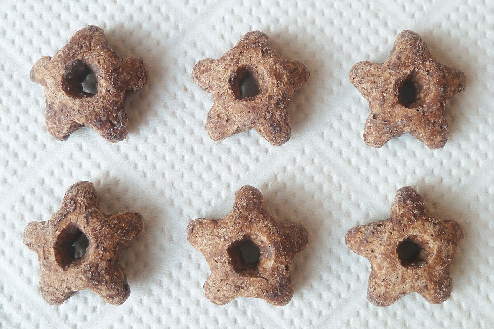

<<a href="https://commons.wikimedia.org/wiki/File:SHIMI_CHOCO_CORN_-_GINBIS.jpg">SHIMI CHOCO CORN - GINBIS.jpg</a> © 2022 by <a href="https://commons.wikimedia.org/w/index.php?title=User:Quercus_acuta&action=edit&redlink=1">Quercus acuta</a> is licensed under <a href="https://creativecommons.org/licenses/by/4.0/">CC BY 4.0</a>